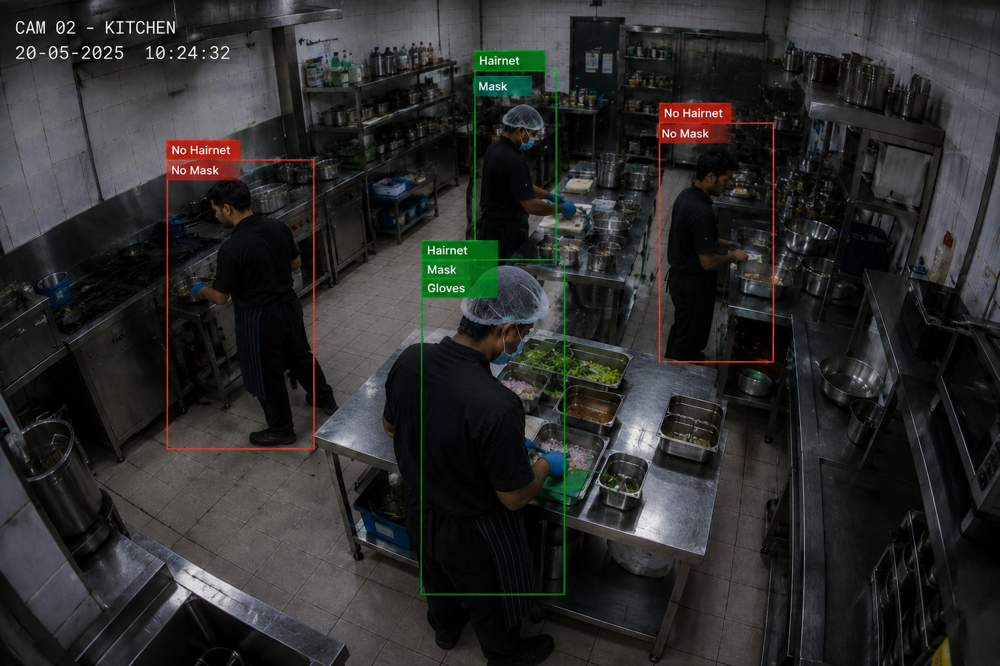

YOLOv11 PPE Detection
Fine-tuned YOLOv11s verifies hairnets, masks, gloves, and aprons across all staff. Detects missing PPE via spatial deduction even when no gear is visible. ~90% precision, <250ms latency.
KitchenGuard AI uses YOLOv11 computer vision to detect PPE violations in real-time, logs every scan to a secure audit database, dispatches Telegram alerts, and auto-generates FDA & HACCP legal citation documents — no clipboard required.
HACCP & FDA 21 CFR compliant · JWT-secured audit logs · Telegram alerts built-in

Built for health inspectors' standards. Designed for kitchen managers' realities.
Fine-tuned YOLOv11s verifies hairnets, masks, gloves, and aprons across all staff. Detects missing PPE via spatial deduction even when no gear is visible. ~90% precision, <250ms latency.
Every scan is automatically saved — timestamp, inspector, media type, violations detected, confidence scores, and annotated snapshot — with JWT-authenticated access control per user.
Instantly generates formal FDA Food Code & HACCP statutory citation documents (Form KG-802) — exact section numbers, severity classification, corrective actions, photographic evidence, and supervisor sign-off block.
Instant automated Telegram notifications to kitchen managers the moment a hygiene violation is logged — includes violation type, confidence score, timestamp, and annotated snapshot image.
Every scan stores a YOLO-annotated snapshot with bounding boxes and class labels overlaid. Viewable directly from the audit log — serves as photographic evidence embedded in citation PDFs.
Full user registration and login with bcrypt password hashing and 7-day JWT tokens. Each inspector's audit history is isolated — only accessible to the owning user or system admin.
When a scan flags a hygiene infraction, KitchenGuard AI automatically generates a formal Form KG-802 citation — citing exact FDA Food Code section numbers, OSHA references, severity tier, corrective action mandates, and photographic evidence from the AI snapshot. One click from the audit table.
Drag & drop any kitchen image or video to run YOLOv11 inference instantly. Results are saved to your audit log when signed in.
Drop a photo or video clip — JPG, PNG, MP4 supported. Max 50MB.
YOLOv11 scans for hairnets, masks, gloves, aprons, and cross-contamination risks with bounding box annotations.
Scan is saved to the audit database. Any violations trigger a Telegram alert and unlock the legal citation PDF download.
Drop a kitchen photo here
JPG, PNG · Max 50MB
YOLOv11 analyzing...
Every scan is automatically recorded with timestamp, inspector, violations, annotated snapshot, and legal citation PDF. Sign in to view your logs.
| Scan Time | Inspector | Media | Status | Violations Detected | Telegram | Snapshot | Legal Citation PDF |
|---|---|---|---|---|---|---|---|
| Sign in to view your secure audit history. | |||||||